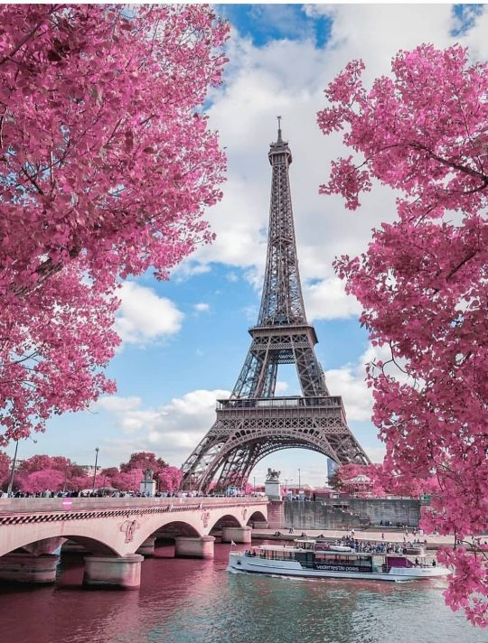

Os melhores lugares para você visitar
França
A França é um país localizado no continente europeu e tem como capital a cidade de Paris. Conta atualmente com mais de 65 milhões de habitantes, sendo a região da Ilha de França a mais populosa delas. Possui clima ameno e um terreno que varia de plano e suavemente ondulado a montanhoso nas regiões leste e sul.